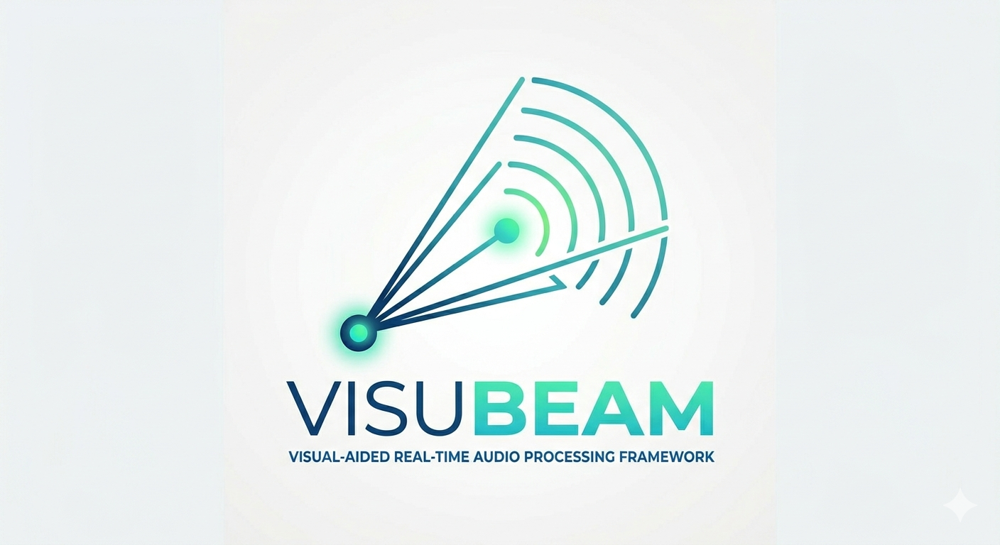
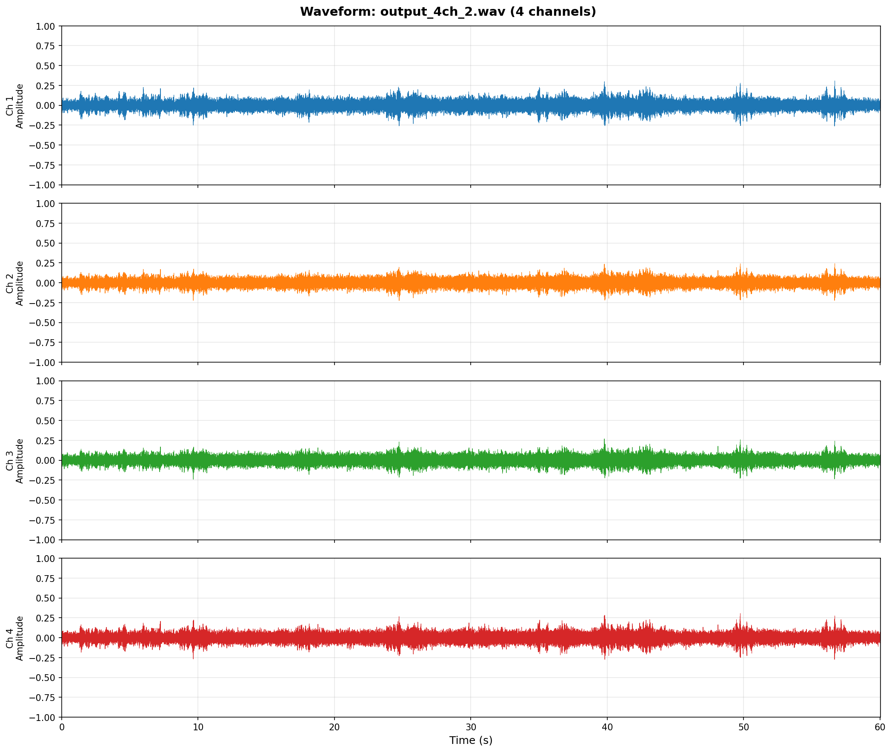
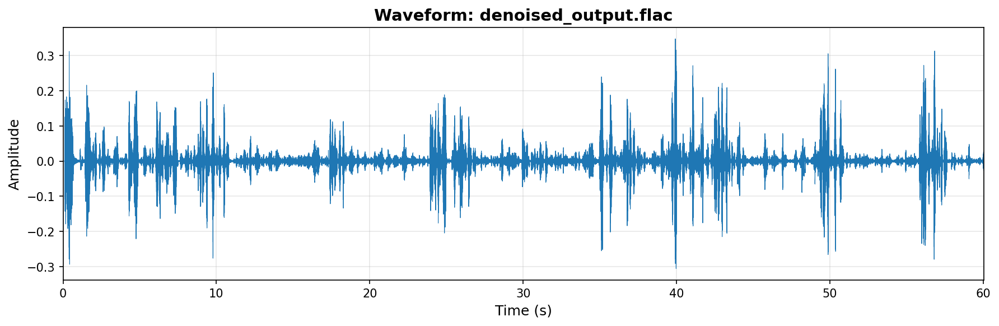
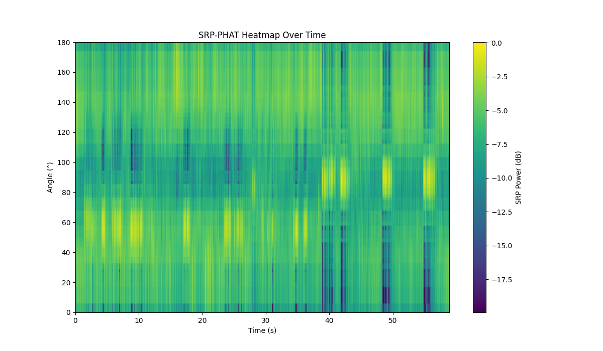
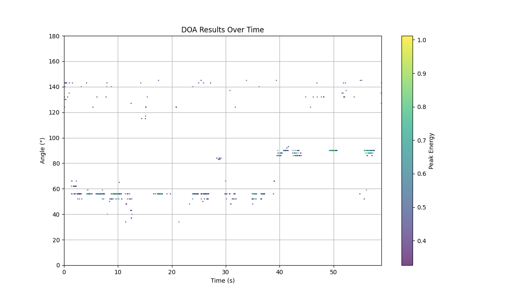
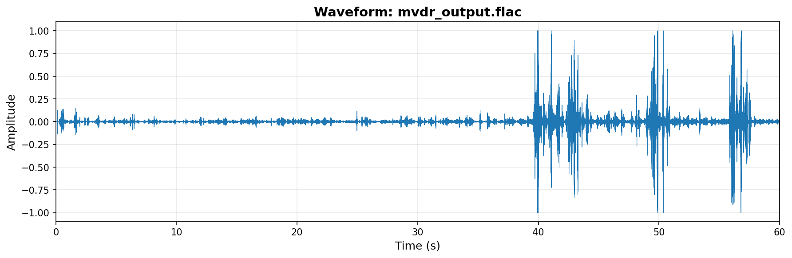
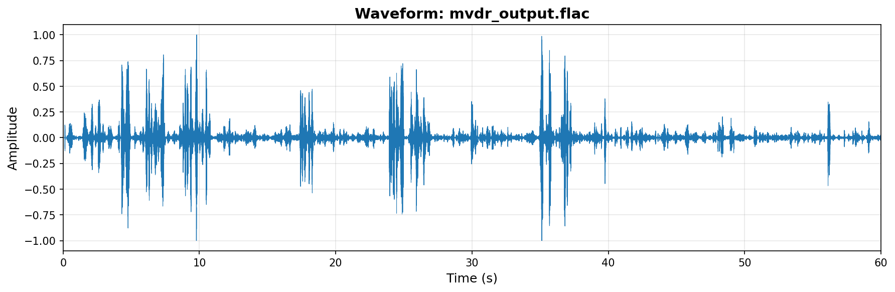

AI / CROSS-MODAL FUSION
VisuBeam: The Anatomy of a High-Performance Audio Engine
A deep dive into real-time multi-channel spatial filtering and target voice extraction.
The Engineering Mission
VisuBeam was designed to solve the "Cocktail Party Problem"—extracting a clean voice signal from a specific speaker in a noisy, reverberant environment. Unlike traditional audio-only systems, VisuBeam leverages Cross-modal Fusion, using visual coordinates to guide precision spatial filtering.

Fig 1: Raw 4-channel input recording with extremely low SNR—the challenging starting point for the engine.
Phase 1: High-Throughput Ingest & Concurrency
Asynchronous Shared Circular Buffer
To ensure zero-drop audio capture during heavy DSP loads, VisuBeam employs a Shared Circular Buffer architecture. This thread-safe producer-consumer model decouples the high-priority AudioStreamPipeline from downstream analysis, ensuring that the raw, low-SNR multi-channel stream is ingested without loss, regardless of processing jitter.
Phase 2: Audio Pre-processing & Spatial Intelligence
WPE, APM (AEC) & MCRA Denoising
Before spatial filtering, the multi-channel stream undergoes a rigorous pre-processing chain. First, WPE (Weighted Prediction Error) removes late reverberation. Then, the WebRTC Audio Processing Module (APM) performs Acoustic Echo Cancellation (AEC) to strip out self-speaker playback. Finally, MCRA tracks the noise floor for dynamic suppression.

Fig 2: Signal after WPE dereverberation and APM/MCRA noise suppression.

Spatial Heatmap (SRP-PHAT)
Real-time Orientation TrackingPhase 3: Precision Target Extraction (MVDR)
MVDR Target Beamforming
This is the core extraction stage. Using target coordinates (from vision or DOA), the EnhancementService builds an MVDR (Minimum Variance Distortionless Response) spatial filter. It mathematically "steers" the array toward the speaker, preserving the target direction with zero distortion while actively canceling interference from other spatial sectors.

Beamforming: Targeted at 90°
Beamforming: Targeted at 55°The amplitude difference in the waveforms above demonstrates how the MVDR filter selectively preserves the signal from the targeted direction while suppressing spatial noise.
Optional Neural Post-Processing
While MVDR handles linear spatial filtering, non-linear noise is suppressed using an optional DTLN (Dual-Path RNN) layer. VisuBeam uses a Model Pooling mechanism to manage these neural instances, ensuring state isolation for multiple concurrent users.
Summary of the Processing Stack
1. WPE: Removes late reverberation to improve clarity.
2. MCRA: Robustly tracks the noise floor for precise covariance estimation.
3. MVDR: Performs the primary spatial beamforming.
4. Network Delivery: Delivers 16-bit PCM binary chunks via high-speed WebSockets.